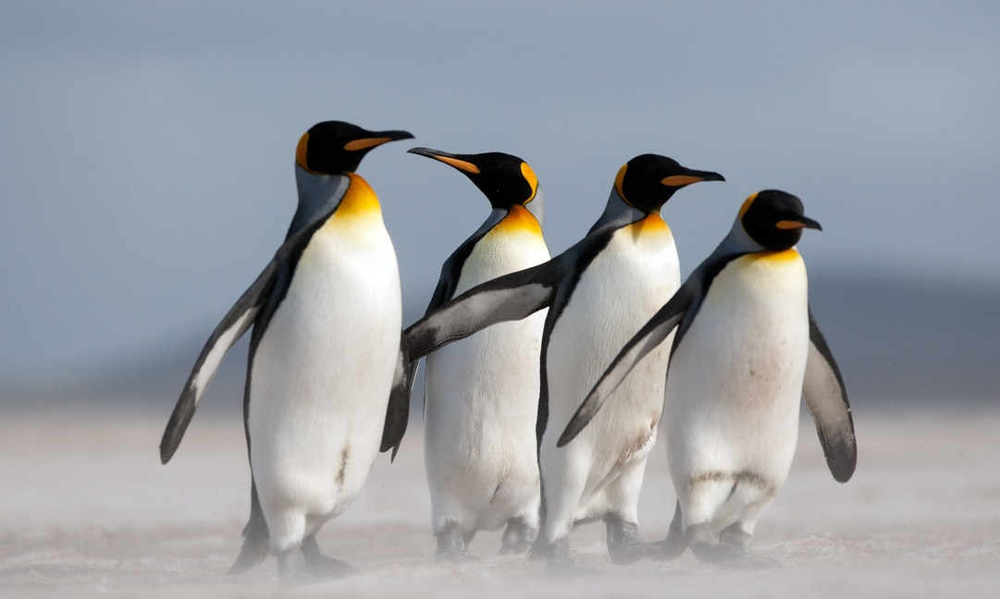
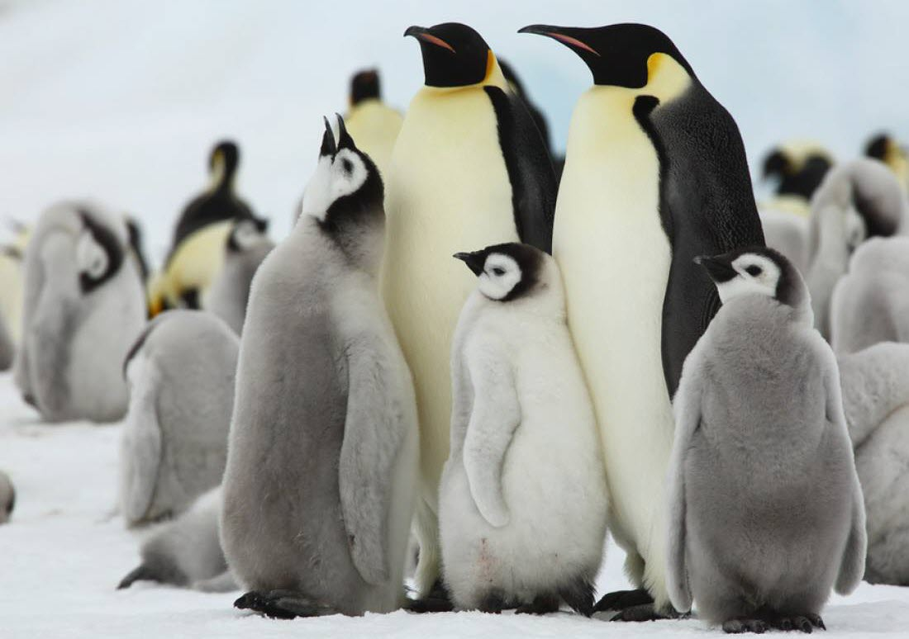
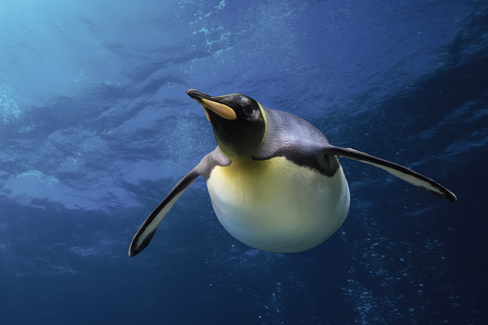
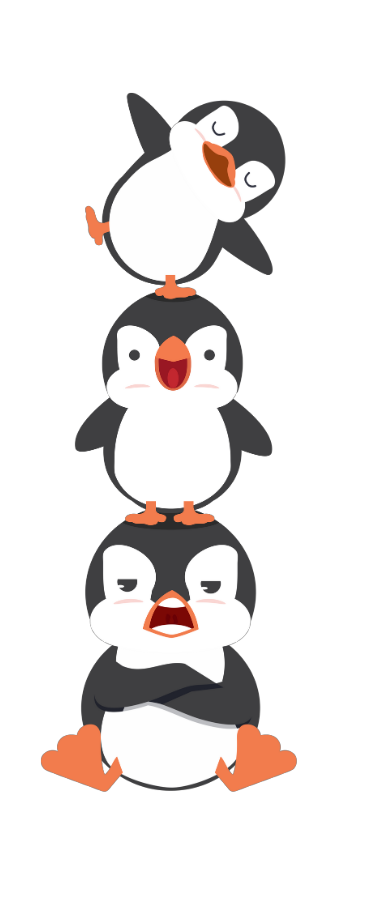

企鵝 Penguin

企鵝

企鵝

企鵝
Previous
Next

性格：
企鵝以其獨特的性格而聞名，牠們通常表現出
團結、社會化和忠誠的特點。企鵝是群居動物
，生活在大型群體中，彼此之間形成緊密的連
結。牠們展現出合作和互助的行為，共同應對
各種挑戰，例如保護幼鳥、保持溫暖、覓食等
。企鵝也具有強烈的家園歸屬感，牠們會返回
自己的繁殖地，並和伴侶一起共同孵化和餵養
幼鳥。此外，企鵝也展現出忠誠和長久的伴侶
關係，一對夫妻會彼此照顧並保持長期的情感
聯繫。
食物：
企鵝的食物主要是海洋生物，特別是小魚和甲
殼類動物。牠們以捕食魚類、烏賊、蝦和小型
海洋無脊椎動物為主食。企鵝通常在海洋中游
泳，利用敏捷的身體和特殊的翅膀構造追捕獵
物。牠們能夠深潛到數十米的水深，以尋找食
物來源。企鵝的嘴部和牙齒適合捕食和咬碎獵
物，並且牠們通常以大量的食物來維持身體能
量和體重。飼養的企鵝則會提供特殊的飼料，
確保其營養均衡和健康成長。總括而言，企鵝
的食物主要來自海洋，且以小魚和甲殼類動物
為主要食源。
外表特徵＆外觀：
企鵝是一種特別迷人的鳥類，牠們擁有獨特的
外表特徵和外觀。牠們的身體被厚實而柔軟的
羽毛所覆蓋，外觀呈現黑白相間的色彩，並擁
有短而直立的身形。企鵝的身體結構和特殊的
適應使其在水中游泳時具有出色的機動性和速
度，而在陸地上則以直立的方式行走。牠們的
翅膀演變成了鰭狀的結構，使其在水中能夠迅
速游動。此外，牠們還具有特殊的外耳孔和鼻
孔，可以在水中自如地呼吸和聽覺定位。
分佈＆數量：
企鵝主要分布在南半球的極地和溫帶地區，其
中南極洲是最主要的棲息地，包括帝企鵝、皇
帝企鵝和其他幾種物種。此外，企鵝還生活在
非洲南部、南美洲和澳大利亞等地區。企鵝的
數量因物種和地區而異，但總體上，由於受到
生存環境的限制和人類活動的干擾，許多企鵝
物種的數量正在減少。一些物種被列為瀕危或
受到保護，例如帝企鵝和皇帝企鵝。
生活型態＆習性：
企鵝是具有特殊生活型態和習性的鳥類。牠們
通常生活在群體中，形成龐大的企鵝團體，以
保持溫暖並提供保護。企鵝以游泳和潛水為主
要方式覓食，牠們擁有特殊的鰭狀翅膀，使其
在水中能夠迅速而靈活地移動。企鵝以魚類、
磷蝦和其他海洋生物為食，這些食物提供了豐
富的能量和營養素。此外，企鵝還展現出優秀
的游泳和潛水能力，能夠在水中迅速捕捉獵物
。牠們還以繁殖行為而聞名，形成親子關係並
通過孵卵和共同育雛來照顧幼鵝。企鵝的生活
型態和習性使其適應了極端的寒冷環境和海洋
生態系統，並展現出令人驚嘆的適應能力。
壽命：
企鵝的壽命約為15至20年左右。